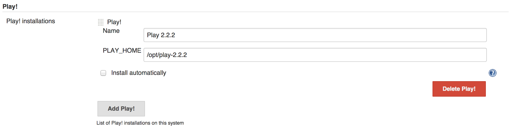
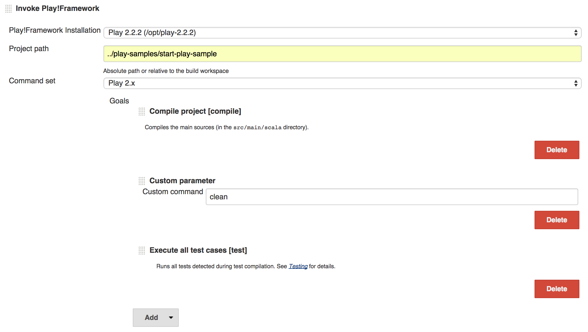
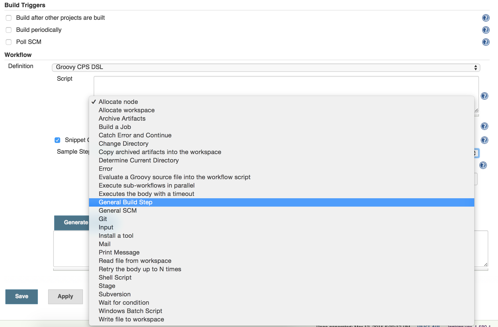
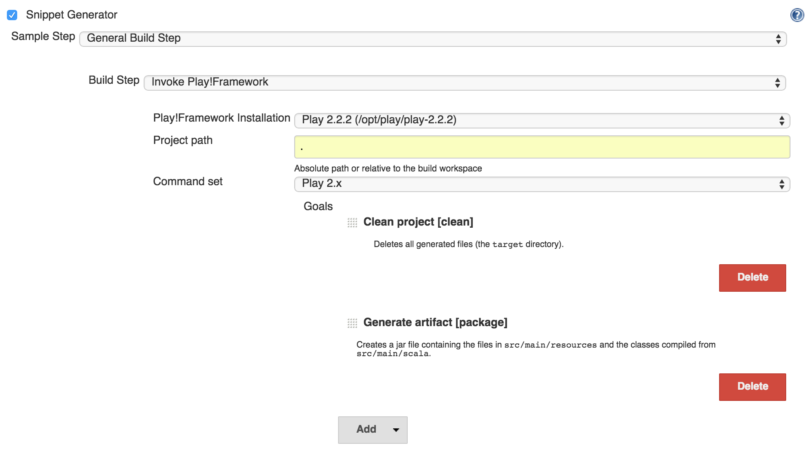

Play!Framework plugin for Jenkins
User Manual
Overview
The Play!Framework plugin brings the command-line capabilities of Play and Activator into the Jenkins environment, integrating these powerful tools to the most widely used Continuous Integration platform. This way, Play projects can benefit from the growing number of features provided by the Jenkins community while improving the traceability of their build elements and visualisation of the respective results.
The plugin supports Play!1.x, Play!2.x as well as Activator projects. It provides a smart selection of most commands available in their CLI. Moreover, it’s also possible to input custom commands via Jenkins interface.
Installation
To start, download the plugin here.
In your Jenkins instance webpage, open Manage Jenkins, then Manage plugins. In the Advanced tab, choose the file in the Upload Plugin section and click Upload. The installation will start automatically. No reboot is necessary.
Global Configuration
In Manage Jenkins, Configure System, a new section will be available: Play!.

Select Add Play! and give it a name and the PLAY_HOME path. Play!Framework or Activator tools can be provided also via Install automatically option, when properly configured.

Save the configuration and move forward.
Job Configuration
Open/create a Jenkins job. Add a build-step Invoke Play!Framework.

Select the Play or Activator tool provided in the global configuration. Provide also the project path and the command set (Play 1.x or Play 2.x, which includes the Activator as well).

Several Goals are listed below according to the selected command set. Create your sequence of goals in the desired order. Commands are executed from top to bottom. A description is provided for each goal right below their respective title.

Save your job configuration and you are ready to go!
Workflow plugin compatibility
Starting from version 0.2.0, Play!Framework plugin can be used within the Workflow plugin for Jenkins. This allows your Play project to be inserted into a more complex build environment that only Workflow provides. Delivery Pipelines are one of the main benefits, allowing higher parallelism and better control of the build chain.
In order to use it, simply create a new Workflow job and use its Snippet Generator feature to create the Play command from the already known User Interface.
Select General Build Step and Invoke Play!Framework.

Fill up the fields and select the goals as in a regular Freestyle Project.

Pressing Generate Groovy will provide the complete Groovy command.

Copy the command and paste it into the Groovy text field. The node function is a basic requirement for any script executed within the Workflow plugin.

Copy the command and paste it into the Groovy text field. The node function is a basic requirement for any script executed within the Workflow plugin.
The configuration is ready! For more information on the Workflow plugin and how to build Delivery Pipelines, refer to the links below:
Hope it helps! For comments, suggestions or bug reporting, please contact me by the e-mail seen on top of this page.